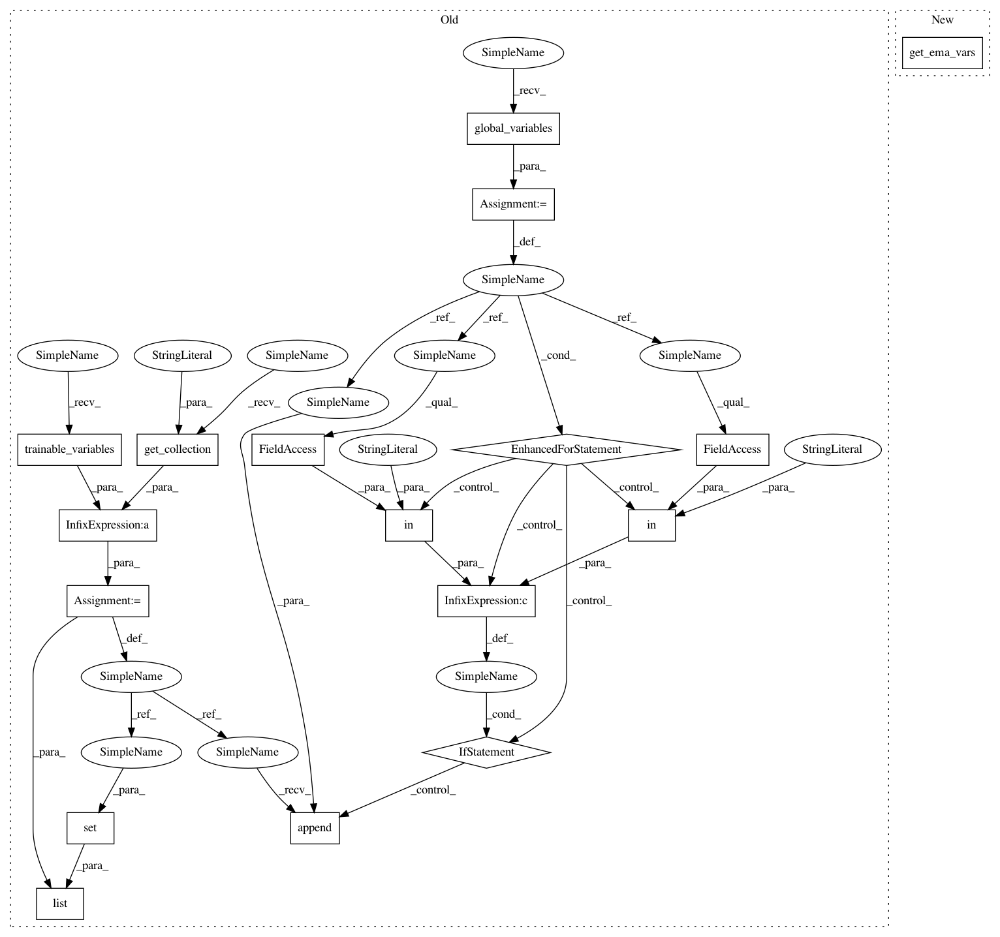

58685226c5c7e30094f02741fce0aa0245737297,models/official/efficientnet/eval_ckpt_main.py,EvalCkptDriver,restore_model,#EvalCkptDriver#Any#Any#Any#Any#,80
Before Change
checkpoint = tf.train.latest_checkpoint(ckpt_dir)
if enable_ema:
ema = tf.train.ExponentialMovingAverage(decay=0.0)
ema_vars = tf.trainable_variables() + tf.get_collection("moving_vars")
for v in tf.global_variables():
if "moving_mean" in v.name or "moving_variance" in v.name:
ema_vars.append(v)
ema_vars = list(set(ema_vars))
var_dict = ema.variables_to_restore(ema_vars)
ema_assign_op = ema.apply(ema_vars)
else:
var_dict = None
After Change
checkpoint = tf.train.latest_checkpoint(ckpt_dir)
if enable_ema:
ema = tf.train.ExponentialMovingAverage(decay=0.0)
ema_vars = utils.get_ema_vars()
var_dict = ema.variables_to_restore(ema_vars)
ema_assign_op = ema.apply(ema_vars)
else:
var_dict = None
In pattern: SUPERPATTERN
Frequency: 3
Non-data size: 17
Instances
Project Name: tensorflow/tpu
Commit Name: 58685226c5c7e30094f02741fce0aa0245737297
Time: 2019-07-16
Author: tanmingxing@google.com
File Name: models/official/efficientnet/eval_ckpt_main.py
Class Name: EvalCkptDriver
Method Name: restore_model
Project Name: tensorflow/tpu
Commit Name: 58685226c5c7e30094f02741fce0aa0245737297
Time: 2019-07-16
Author: tanmingxing@google.com
File Name: models/official/efficientnet/main.py
Class Name:
Method Name: model_fn
Project Name: tensorflow/tpu
Commit Name: 58685226c5c7e30094f02741fce0aa0245737297
Time: 2019-07-16
Author: tanmingxing@google.com
File Name: models/official/efficientnet/eval_ckpt_main.py
Class Name: EvalCkptDriver
Method Name: restore_model
Project Name: tensorflow/tpu
Commit Name: 5ef64b79a43ba8f4806d68fe61d6a97ce25e6f80
Time: 2019-07-15
Author: tanmingxing@google.com
File Name: models/official/mnasnet/mnasnet_main.py
Class Name:
Method Name: mnasnet_model_fn